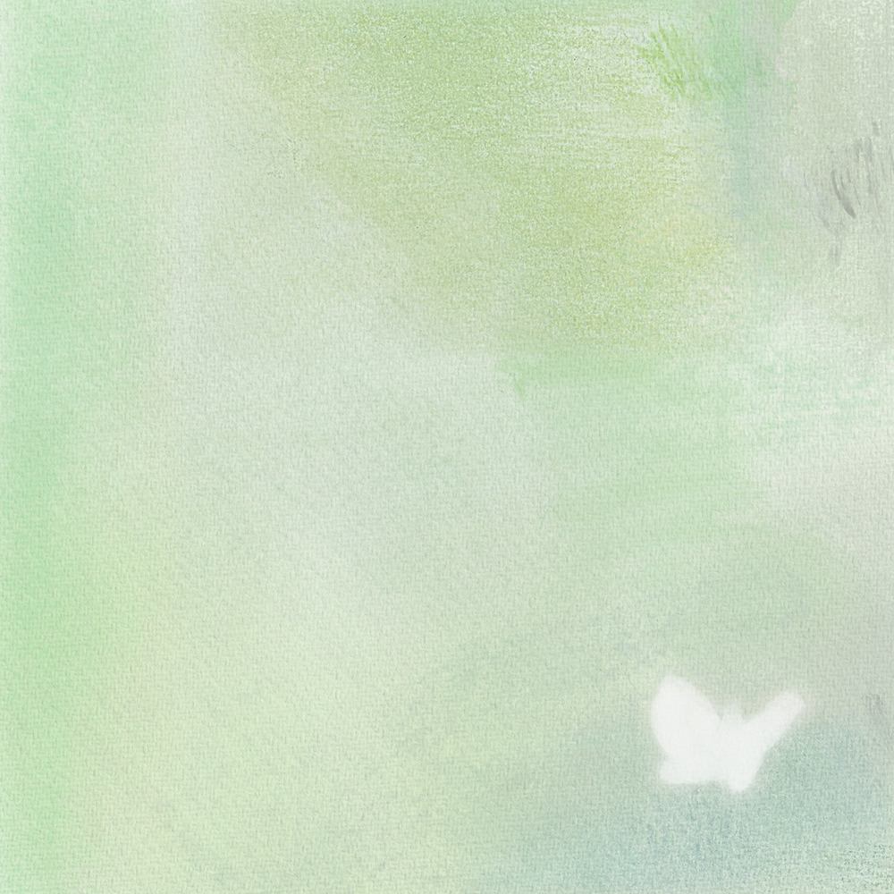

안녕하세요 라보엠입니다.
최유리 좋아하세요? 혹시 적재는요? 그럼 둘이 노래를 함께 부른다면 어떨까요? 그런 일이 실제로 일어났습니다. 너무나도 매력적인 음색을 가진 가수 최유리의 첫 정규앨범에 적재가 피처링을 한 곡이 선공개되었습니다. 최유리 (feat. 적재)의 노래 메아리 입니다.
최유리 - 메아리 (feat. 적재) MV
최유리 첫 번째 정규 선공개 디지털 싱글
‘메아리 (????. 적재)’
먼 거리에서 뱉어보는 내 작은 첫소리는 메아리가 되어 당신에게 닿습니다.
나는 그 메아리의 첫 소리에 생각보다 더 많은 마음을 담습니다.
[Video Credit]
감독 : 박진우
연출, 편집 : 박진우
조연출 : 임찬하
촬영 : 유민주, 김환호
조명 : 허문호, 박상진, 조범규
미술 : 오유미 (오차원)
D.I : 뉴톤의 법칙
메이크업 : 박현아 (블로우)
헤어 : 이동민 (블로우)
스타일리스트 : 구승혁
A&R : 김보성, 이주형
매니지먼트 : 박세리
최유리 메아리 노래 가사
메아리 (feat. 적재)
Lyrics & Composed by 최유리
(최유리.)
들려오는 이 묘한 소리는
내가 말한 것이 들리는지
헷갈리기는 하네 그래
너의 이름 한 번 불러볼까
울려 퍼질 거야 이 소리는
달리던 너를 멈출 그런
아
부드럽게 들려오네
넌 나를 부르는 마음을 보내
메아리의 첫 소리에
난 너를 다시 담아서 또 보내
사랑을 해야 해 사랑을 해야 해
(적재.)
참 좋은 소리인 것만 같아
난 그저 편하게 뱉어다가
울려 퍼질 공간에 너를 보내
(아) 사랑은 또 사람의 또 다른 사랑을
(아) 부르고 달려오던 따듯한 마음과
(아) 시원한 듯 뜨거웠던 그 묘한 기분을
아
부드럽게 들려오네
넌 나를 부르는 마음을 보내
메아리의 첫 소리에
난 너를 다시 담아서 또 보내
사랑을 해야 해 사랑을 해야 해
최유리 메아리 후기
최유리의 목소리와 노래는 뭐랄까 말로 표현할 수 없으면서 아름답습니다. 무라카미 하루키가 직업으로서의 소설가에서 얘기한 오리지널리티의 요건을 완벽하게 가진 아티스트가 아닐까 싶습니다. 아직 젊은데 아름다운 목소리와 좋은 노래를 만들 수 있는 두가지의 재능을 가지고 있다니 샘도 나면서 존경스럽습니다. 최유리의 단독콘서트가 2024년 11월 9일, 10일 세종문화회관에서 단독 콘서트 우리의 언어가 열립니다. 기회가 된다면 가보고 싶네요.
2024 최유리 콘서트 : 우리의 언어
2024 최유리 콘서트 : 우리의 언어
www.sejongpac.or.kr
최유리 정규앨범 echo

Lyrics & Composed by 최유리
Arranged by 최유리, 문지혁
String Arranged by 권영찬
Piano by 문지혁
Guitar by 김도훈
Bass by 김영광
Drums by 장다인
Strings by 융 스트링
Recorded by 정기홍 (Assist. 최다인, 이찬미) @Seoul Studio, 김준영 @Dream Factory studio
Mixed by 고현정 (Asst.지민우, 김준영) @koko sound studio
Mastered by 권남우 @821 Sound
[Credit]
Executive Producer 박진우 for Nave
Producer 최유리
Chief Of A&R 김보성
A&R 이주형, 임유정
Management 박세리
Album Design 홍수빈
Video Contents 정재훈